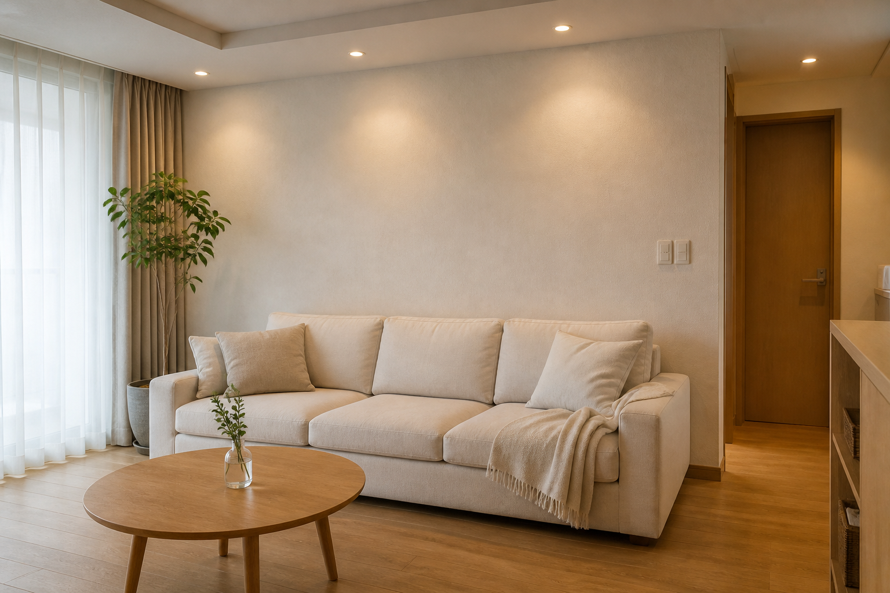
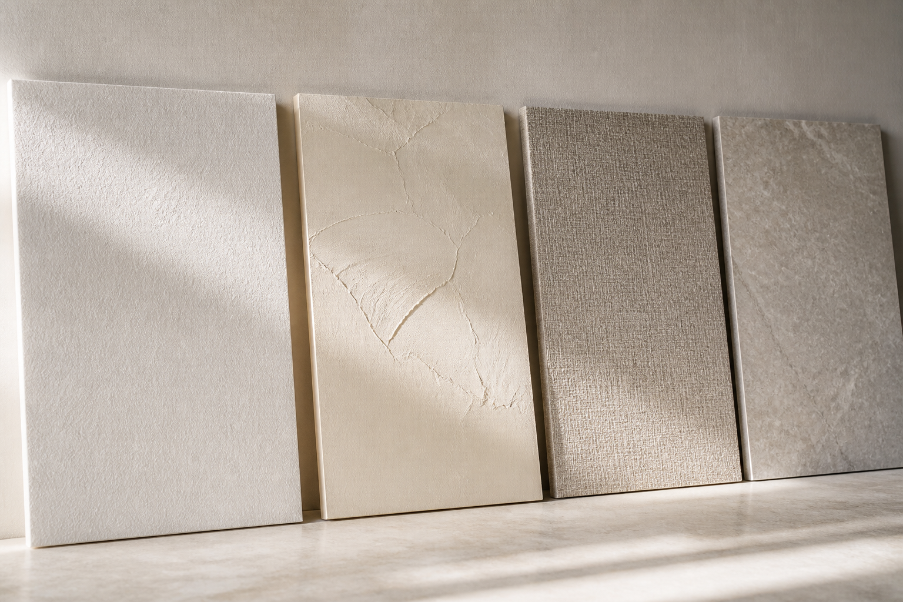
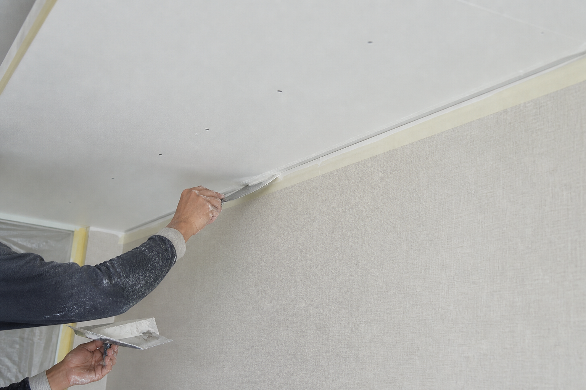
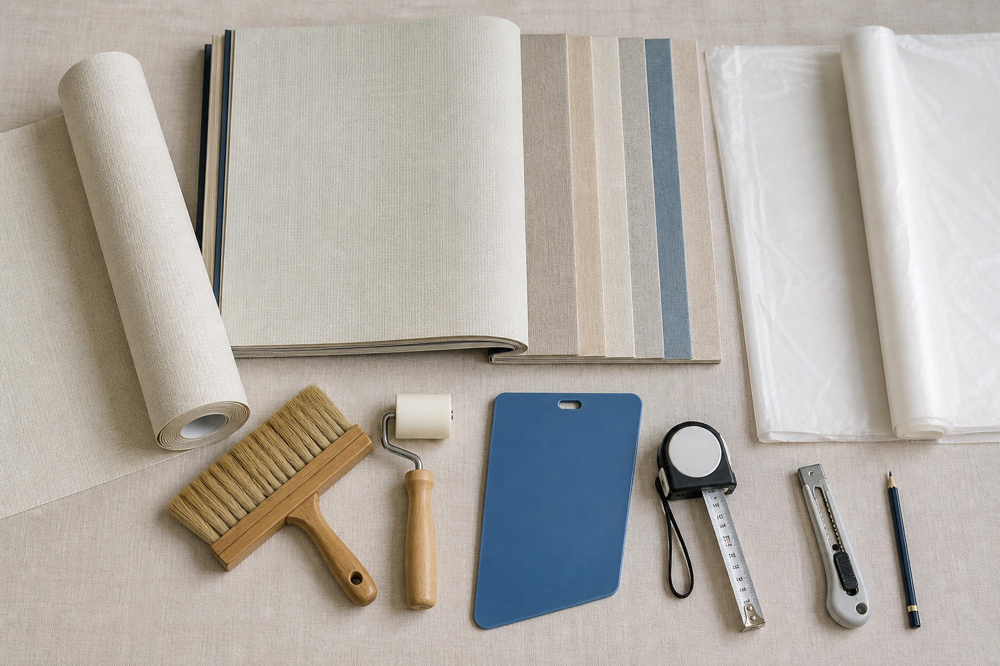
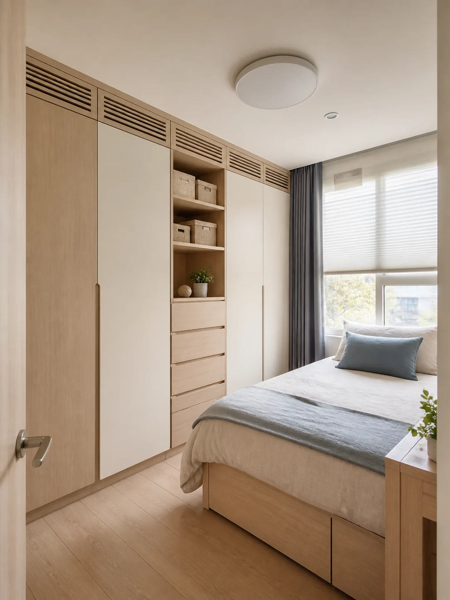
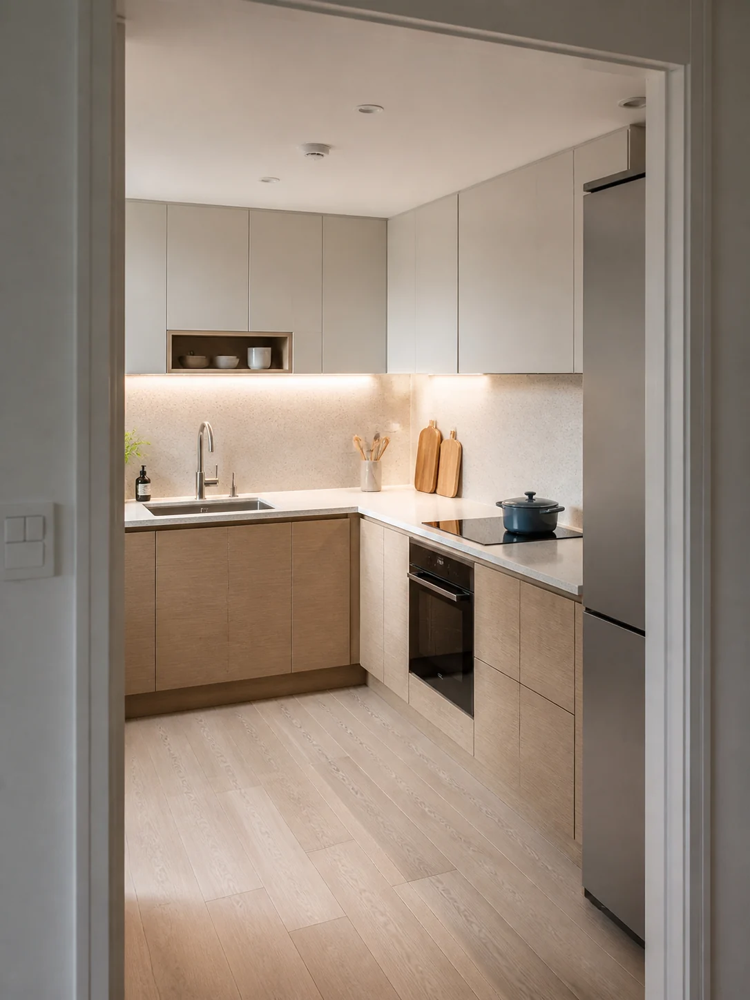
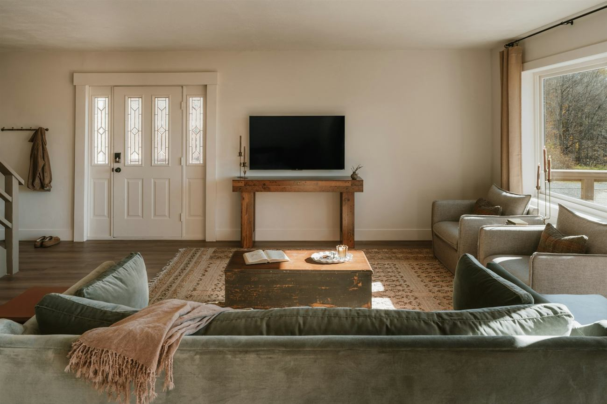

합지벽지
종이를 중심으로 만든 기본 벽지입니다. 예산 부담이 비교적 낮고 짧은 사용 기간이나 임대 공간에 적합합니다.
- 가격과 교체 편의 우선
- 이음과 벽 요철이 보일 수 있음
- 전세·작은방·예산형 공사

색만 고르지 마세요. 바탕 상태, 표면 질감, 관리 방법과 몰딩 디테일까지 함께 봐야 오래 만족할 수 있습니다.
벽은 시야에서 차지하는 면적이 커서 같은 가구와 바닥을 유지해도 벽의 색과 질감만으로 공간의 인상이 크게 달라집니다. 최근에는 단순한 흰색보다 회벽·스톤·패브릭·페인팅처럼 빛에 따라 음영이 달라지는 표면이 주목받고 있습니다.
가격만 비교하지 않고 사용 기간, 오염 가능성, 원하는 질감과 보수 계획을 함께 봅니다.
종이를 중심으로 만든 기본 벽지입니다. 예산 부담이 비교적 낮고 짧은 사용 기간이나 임대 공간에 적합합니다.
표면층이 있어 질감과 색 표현이 다양하고 일상 오염 관리가 상대적으로 편한 제품군입니다.
샘플은 반드시 세워서 낮과 밤, 조명 아래에서 확인하세요.

화면의 색은 실제와 다를 수 있습니다. 최종 선택 전 큰 실물 샘플과 정확한 품번을 확인합니다.
벽과 천장이 만나는 선을 얼마나 정교하게 만드는지가 결과를 좌우합니다.

벽과 천장 접점의 오차를 몰딩으로 가릴 수 있어 구축 현장과 보수 범위가 제한된 공사에 현실적입니다.
공간이 높고 단정해 보이지만 벽·천장 면이 고르지 않으면 오차가 그대로 드러나 목공·퍼티·도배 기초가 중요합니다.
무몰딩의 핵심은 몰딩을 없애는 것이 아니라
벽과 천장의 선을 만드는 것입니다.
바탕이 좋지 않으면 비싼 벽지를 선택해도 결과가 좋지 않을 수 있습니다.
슬라이더를 움직이면 기존 마감과 회벽 화이트 적용 결과를 바로 비교할 수 있습니다.

완성 벽면만 보지 말고 견적서에 각 공정의 포함 여부를 기록하세요.

기존 벽지의 겹수와 벽 상태를 확인하며 제거합니다. 곰팡이·누수·석고 파손이 발견되면 새 벽지를 붙이기 전에 원인을 먼저 해결합니다.
A4 샘플과 거실 전체 시공은 밝기와 반복 무늬가 다르게 보입니다. 벽지 샘플 → 실제 공간 → 조명 적용 순서로 확인합니다.



집 전체의 메인 분위기
오염 관리와 밝은 느낌
차분하고 따뜻한 분위기
공간이 넓어 보이는 선택
오염과 부분 보수 고려
안정적인 집중 분위기
아이보리 패브릭과 3000K 조명
밝은 스톤과 2700~3000K 조명
스테인리스·블랙과 3000~3500K 조명